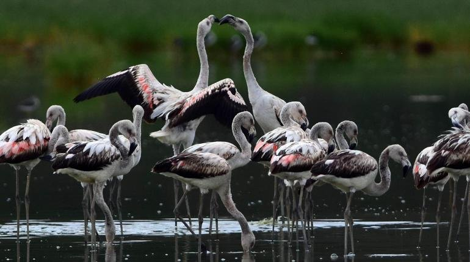
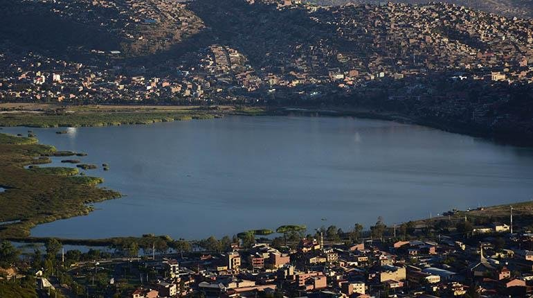
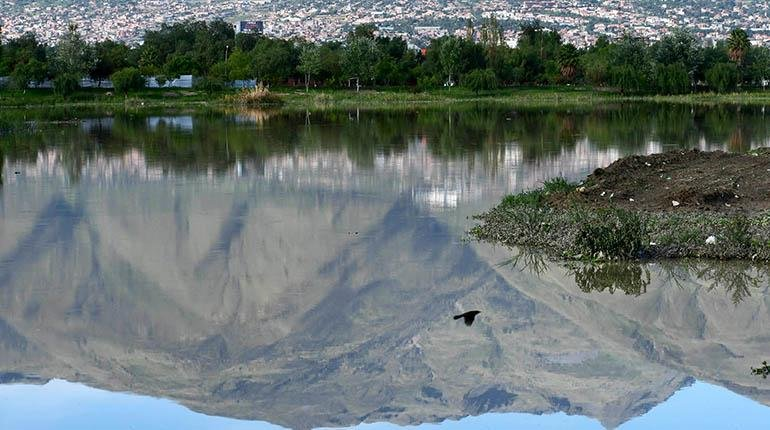

Los servicios ecosistémicos de las lagunas en Cochabamba
Pese a la presión de la urbanización y al descuido, las lagunas que persisten en la ciudad cumplen funciones esenciales para el ecosistema y para nuestro bienestar. Esos beneficios, conocidos como servicios ecosistémicos, son la mejor razón para cuidarlas y preservarlas.
Refugio de biodiversidad
Las lagunas de Cochabamba albergan una gran riqueza biológica. En ellas crecen muchas especies de plantas hidrófilas que atraen aves, anfibios e insectos, hasta formar verdaderos micro-ecosistemas. Muchas especies anidan, se alimentan y descansan en sus aguas en las distintas estaciones del año. Estos pequeños cuerpos de agua son indispensables para la reproducción de otras formas de vida y, además, embellecen el paisaje urbano.

Reguladoras del clima
Como indican varias investigaciones, las lagunas ayudan a mitigar los efectos del cambio climático en la ciudad. Absorben la radiación solar y hacen que las temperaturas de su entorno sean más bajas, lo que alivia el calor urbano, que tiende a ser mayor por la cobertura de concreto, las edificaciones y la circulación vehicular.
En una ciudad como Cochabamba, llena de concreto y ladrillo, con muy pocos árboles y que en los últimos años ha registrado temperaturas cada vez más altas, contar con lagunas es una de las soluciones más poderosas frente al calor excesivo.

Defensa natural contra inundaciones
Las lagunas son, además, zonas naturales de inundación. En época de lluvias contienen las crecidas de agua y protegen a barrios y viviendas de inundaciones y desbordes. Por eso, rellenar o lotear sus terrenos es una mala idea: aunque se drenen y sequen, esas tierras corren el riesgo de volver a inundarse en una temporada de lluvias intensa.

Cada laguna que desaparece se lleva consigo estos servicios. Cuidar Alalay, Coña Coña y Quenamari es, en el fondo, cuidar la calidad de vida de quienes habitamos el valle.
En algunos rincones, todavía no muy alejados del radio urbano, aún se encuentran vestigios del espacio natural que alguna vez adornó el valle de Cochabamba.
Referencias
- Elementos para una historia ambiental del río Rocha, Un enfoque ecocrítico y biorregioonal. Carlos Osbaldo Crespo Flores. Laura Irma Crespo Peñaranda. Centro AGUA-UMSS (2020).
- Historia Laguna Cuellar, documental TVU (2014).
- La Laguna de Quenamari, documental TVU (2014).
- La Laguna Cuellar y la construcción del emblemático estadio Félix Capriles, Ahora: historias y leyendas de Cochabamba.
- En 30 años, la ciudad perdió 4 lagunas urbanas y hay 3 en riesgo, Los Tiempos.
- La ciudad perdió cuatro lagunas urbanas en más de medio siglo, Los Tiempos.
- La laguna Quenamari está seca y vecinos nivelan la tierra para sembrar, Los Tiempos.
- Cinco viviendas invaden la laguna Quenamari y buscan frenar loteos, Opinión.
- En tres años no hay ley de protección de Quenamari, Los Tiempos.
- Flamencos realzan el paisaje en la laguna de Quenamari, Los Tiempos.
- Fotografías laguna de Coña Coña, por Javier Vera Monzón.
Créditos
Todas las fotografías en blanco y negro fueron hechas por Rodolfo Torrico Zamudio. Excepción de la fotografía de la Laguna Cuellar del año 1925, cuyo autor desconocemos.